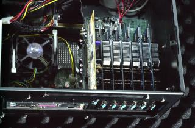
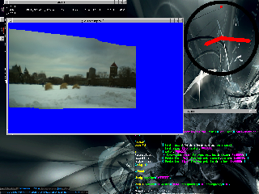

OpenVIDIA : Parallel GPU Computer Vision
Home
Screenshots
Installation
Instructions
Quickstart
Programming
Example
CD Source Code
Download
Papers
Project
sf.net project page
Related Projects
Links

Page design based on Blosxom (which was used originally before the move to sourceforge).
This page best viewed with Dillo, Lynx, w3m, Mozilla-Firefox, Galeon, Epiphany . . .
Screenshots
{kind=link}
A computer vision machine with 6 PCI graphics cards, and 1 AGP graphics card. Each PCI card has a GeForce FX 5200 GPU which runs pattern recognition and computer vision tasks in parallel, creating a cheap, powerful, and easily constructed parallel architecture well suited for pattern recognition and computer vision.

{kind=link}
glestpchirp2m running on the University College sequence

Canny edge filter (implemented by Fung and Aimone)

Modified Canny edge filter which locates corners instead (Fung and Aimone)
OpenVIDIA locates corners and edges and calculates feature vectors for each corner in realtime on a FX6800 Click the image for a movie. [mpg 1.2 MB]
All the world's a marker: Markerless tracking

The above altered to track corner points in the image (Fung, Aimone). The green lines connect the same point in the previous image to its new location in the next image. Click the image for a movie. [mpg 6.0 MB high quality to see the lines properlly]

Download Video
Corner tracking + Projective RANSAC motion estimations. Blue dots indicate found corners, green lines connect the points to its previous location, indicating corners which all have the same, dominant motion. Notice that the moving hand and unmatchable corners are segmented out, and do not affect the estimation on the main projective motion. It can track over 140 correspondences at 30 fps. This video is live (you can see it when it looks at the monitor too), but is running at 22 fps on account of having to compress and write a jpeg to disk every frame (in order to make the video).

Features are tracked and given an ID number, possibly useful input for higher level vision tasks. [16MB video].

Skin tone segmentations locates people and hands, and is a useful first step in many applications, including gesture tracking, and giant
The resulting load on a 2.0 GHz CPU machine was 0.02, 30fps, 320x240


3D registration. Imported objects from Cal3D (import conducted thanks to Mohit Kansai and Billal Belmellat, 3d registration thanks to Chris Aimone).

flcornersTrack scene tracking/annotation program. More info
Click for a video (1MB).

3D studio import. [v0.07]